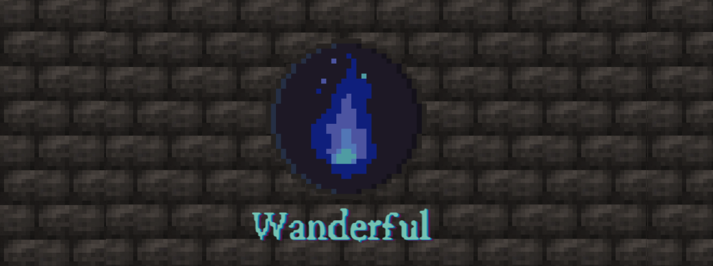
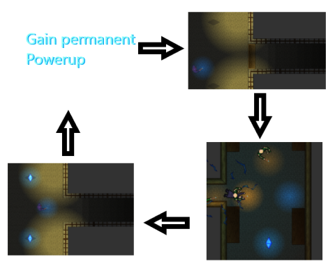

Wanderful - Final Entry

A wanderful Summary
Wanderful is the end result of our project in the Game design course at KTH.Interested in trying out the game? Check out the Wanderful Website.
Want to see our game design document? Download it here: TO BE ADDED
About the game
The game is a fast paced top down 2D shooter game featuring spells, intense fast paced gameplay and able difficulty to challange the player. The game takes heavy inspiration from the game Hotline Miami but adds its own spin by introducing elements from roguelike games alongside a vastly different setting. Nevertheless, throughout development, we strived to recreate the same addicting gameplay while adding even more intensity and magic chaos.
The gameplay loop consists of the player entering the hub floor on a certain level, after which they are required to aquire a set of crystals to unlock a door that leads to the next hub area. Each of these crystals can be found in various levels
accessible through the hub, and requires the player to battle through hordes of enemies trying to stop the player. On their side, the player has a vast array of different spells that can be used to eliminate anyone standing in their way but beware, the
enemies use the same spells you do.
If you want to see more detailed week-by week breakdowns of our progress, alongside my own personal contribution during each week, check out the weekly blog entries
on the blog entry page.
Summary of my total contributions for the game throughout the project
 - Setting up the Unity project/enabling Unity2D in the Unity universal render pipeline.
- Setting up the Unity project/enabling Unity2D in the Unity universal render pipeline.- Player character movement, controls and animation
- Player camera tracking/panning
- Logic behind all spells used in the game (projectile, AoE, Spells, Utility and blink).
- Modular spell framework containing all spells for the game and allowing for easily adding new spells and spell types.
- Objects used for the spells; projectiles, AoE explosions and their animations, the beam spell visuals and all lightning associated with the spells (Everything except for the base artwork)
- All player UI elements; health/mana bars, spell equip slots and icons, score and timer.
- Main menu; graphics and interaction
- Overarching game logic (level loading and Unity scene management).
- The warden character (Artwork, AI, gameplay logic and conditions for spawning)
I also helped with enemy Ai where I for example made some edits to hook the enemies into the spell framework, making it so that enemies would agro on the player if the player fired a spell nearby as well as adding the option for stationary enemies. (The basis for our enemy Ai script came from a modified version of my previous top down game project) Finally, I also made it so that the enemies would change the color of their robes based on their equipped spell.
Outside of the pure development side of things, I participated actively in most group tasks (meetings, writing of documents etc).